Probability and Statistics Week 6
Continuous Random Variables

Probability Density Function
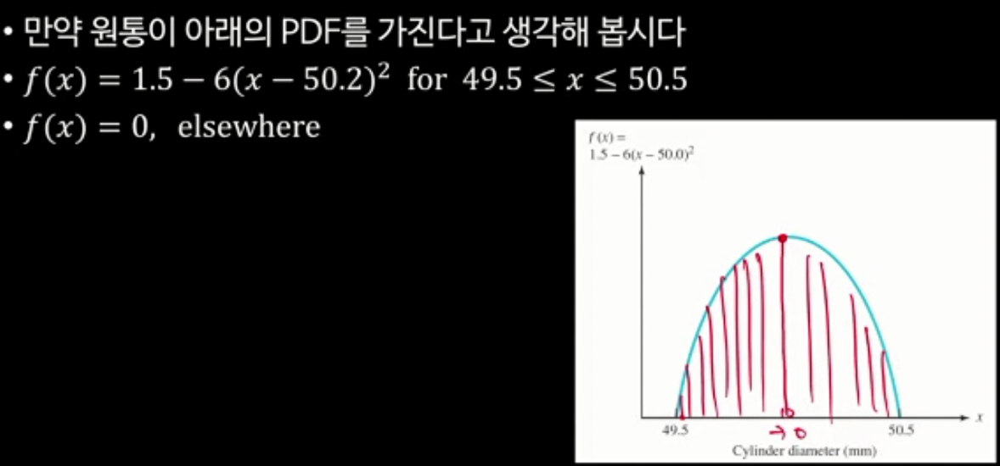
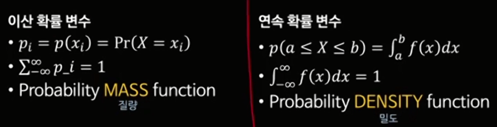
Density vs Mass
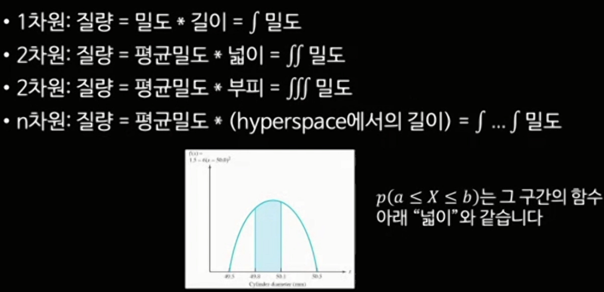
연속분포의 평균과 분산
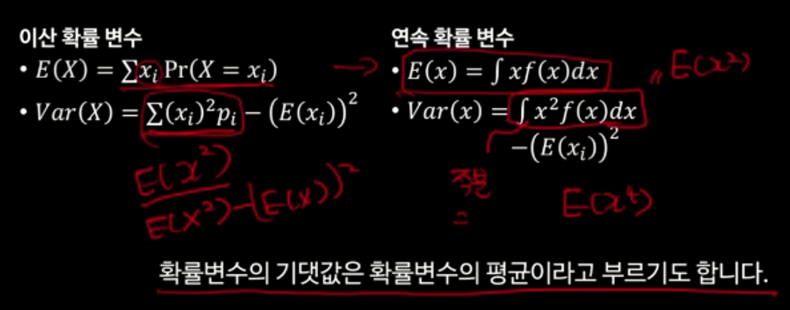
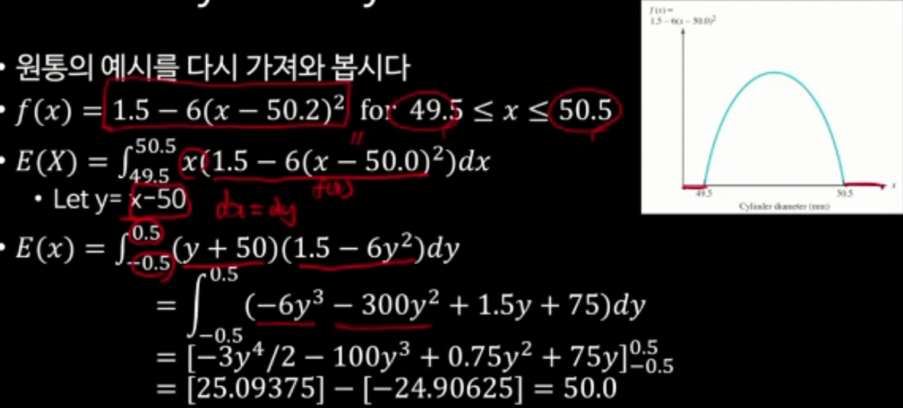
Variance
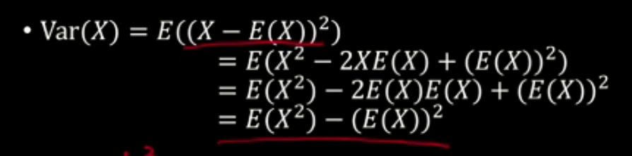
Uniform distribution
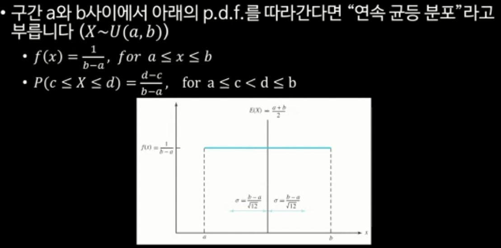
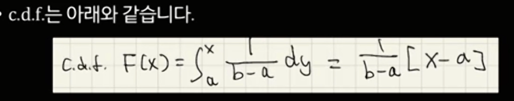
Exponential distribution
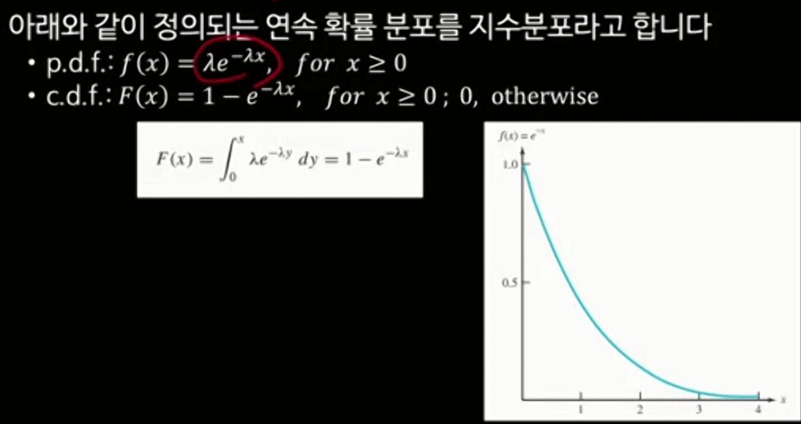
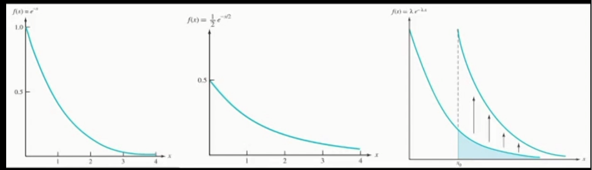
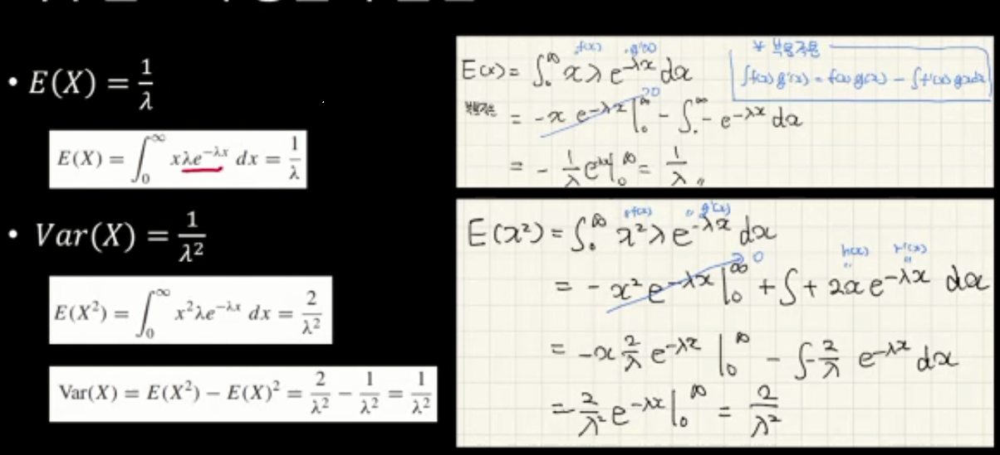
The memoryless property of the exponential distribution
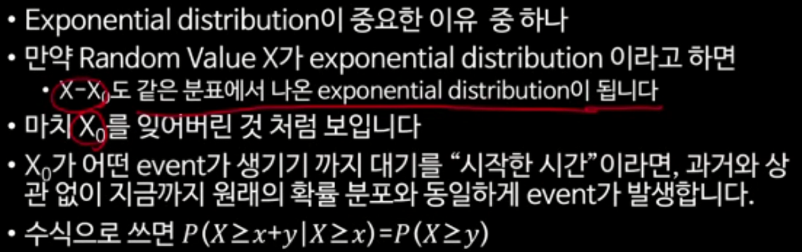
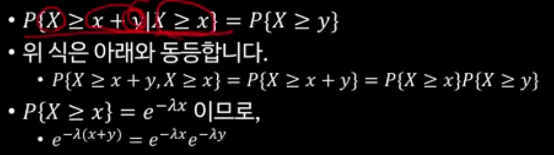
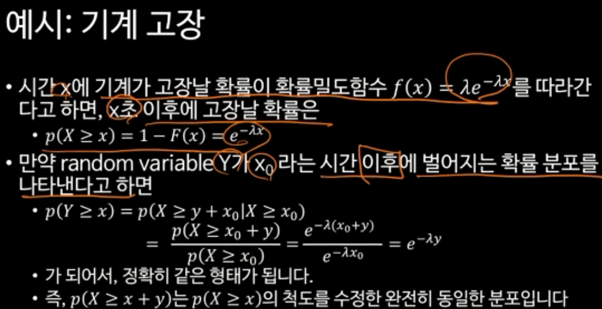
Parameter \(\lambda\)의 의미
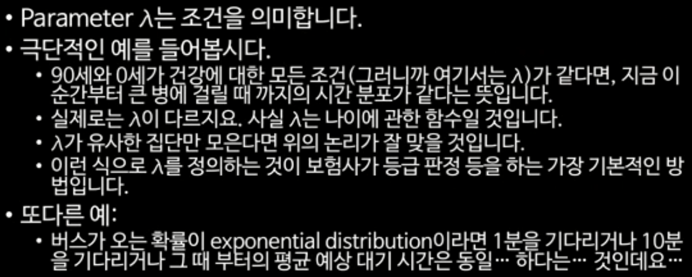
Poisson process
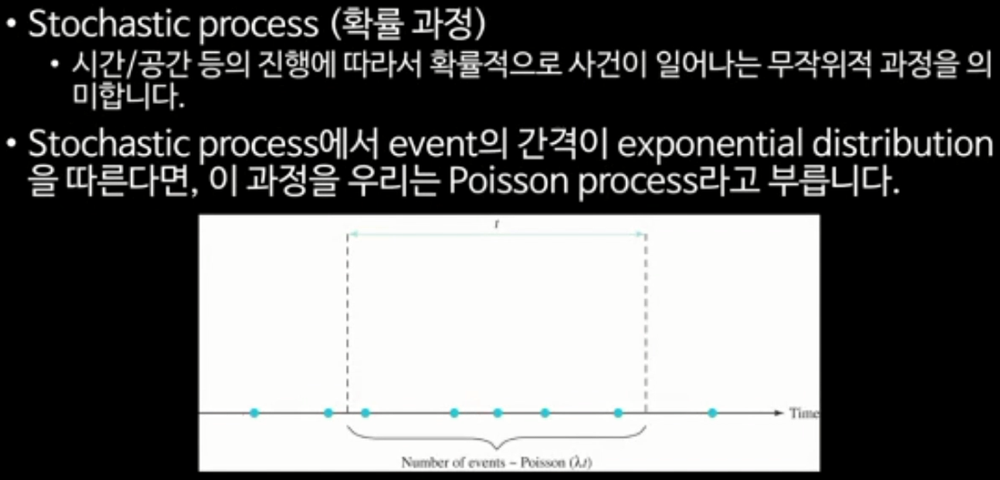
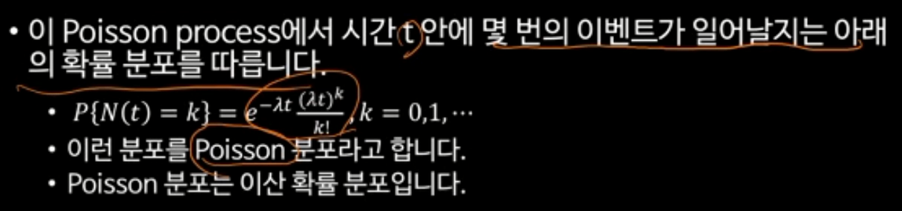
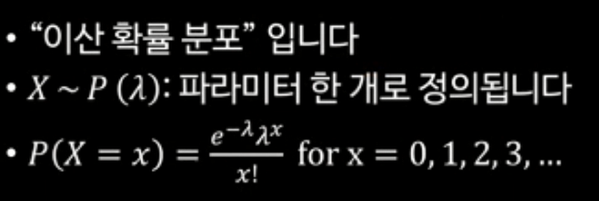
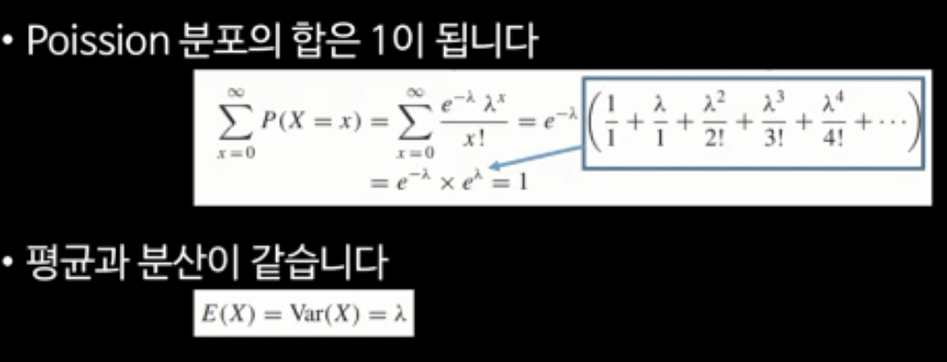
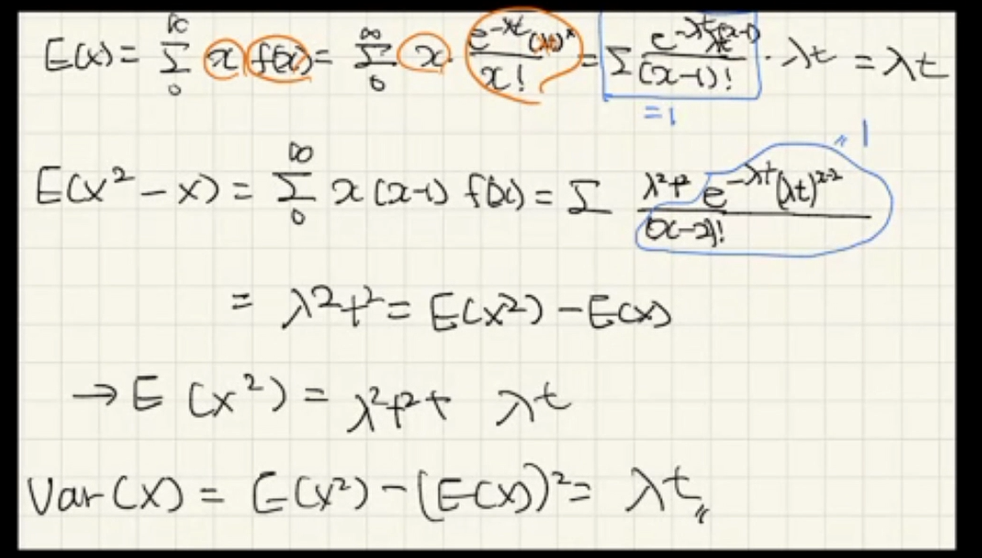
이항분포와 Poisson distribution
Binomial distribution
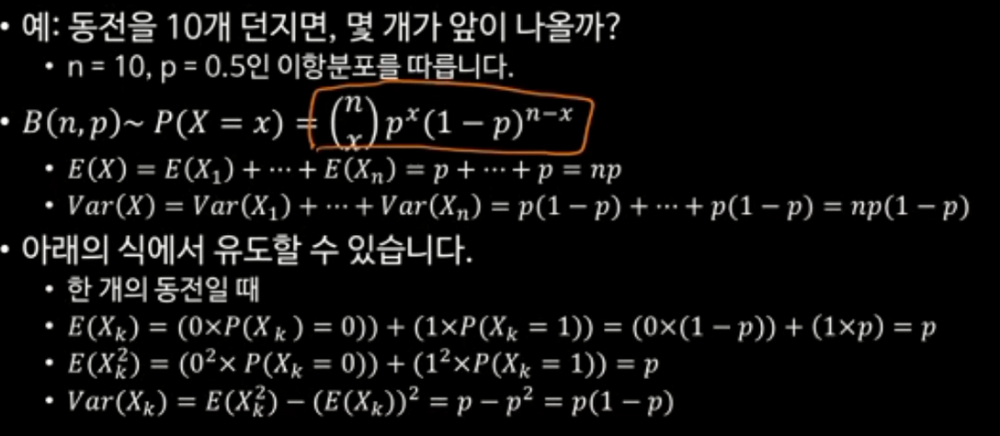
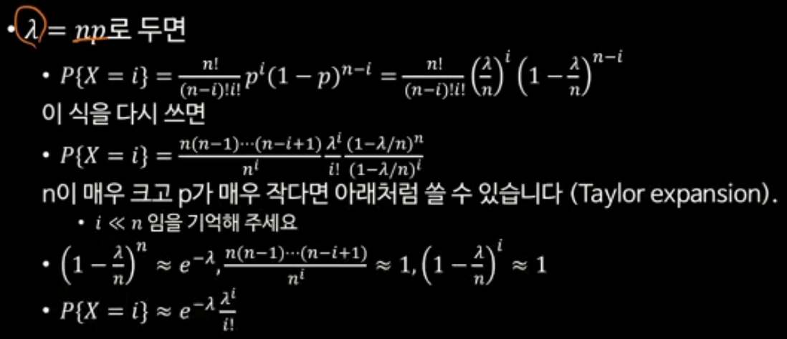
지수분포로부터 Poisson distribution 유도
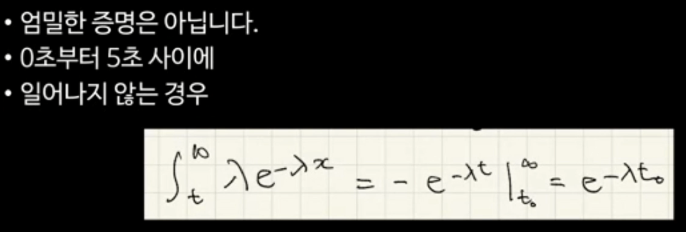